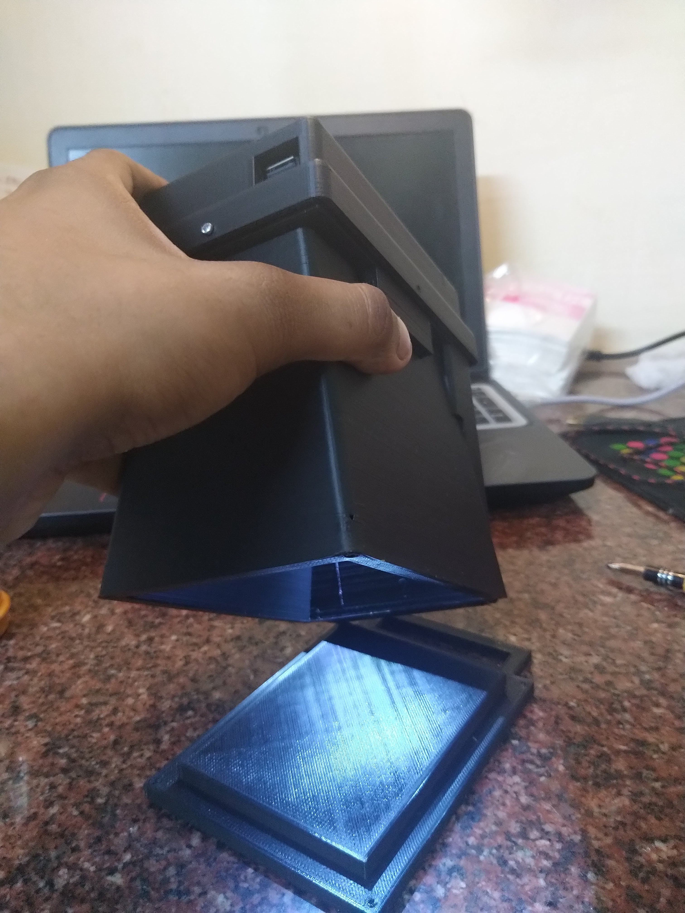
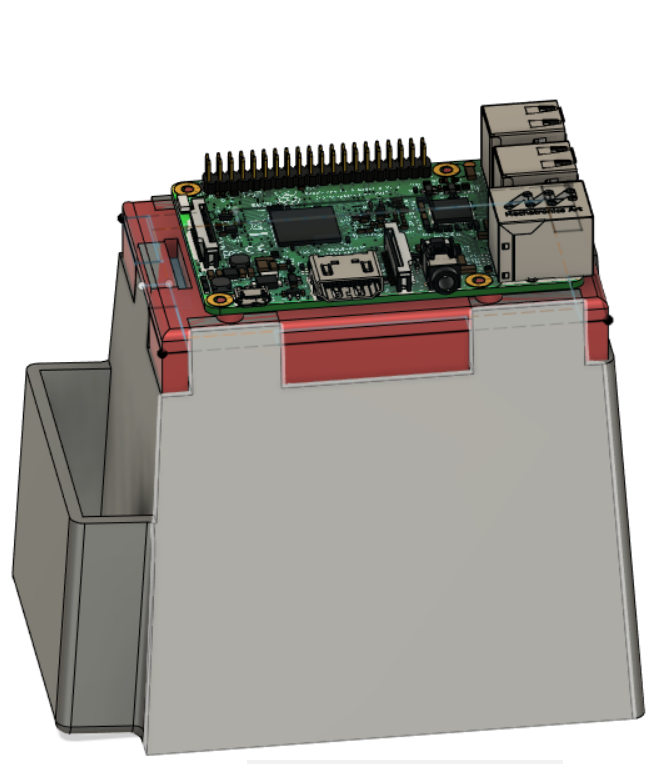
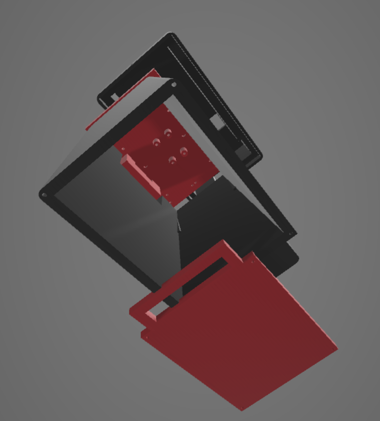
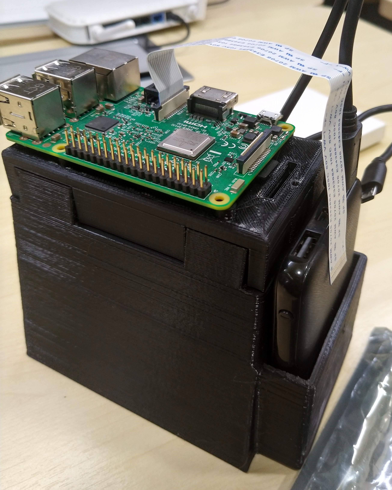
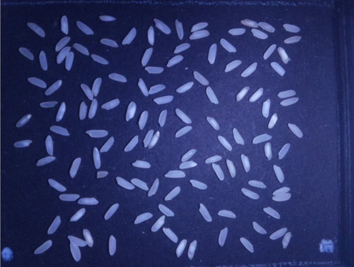
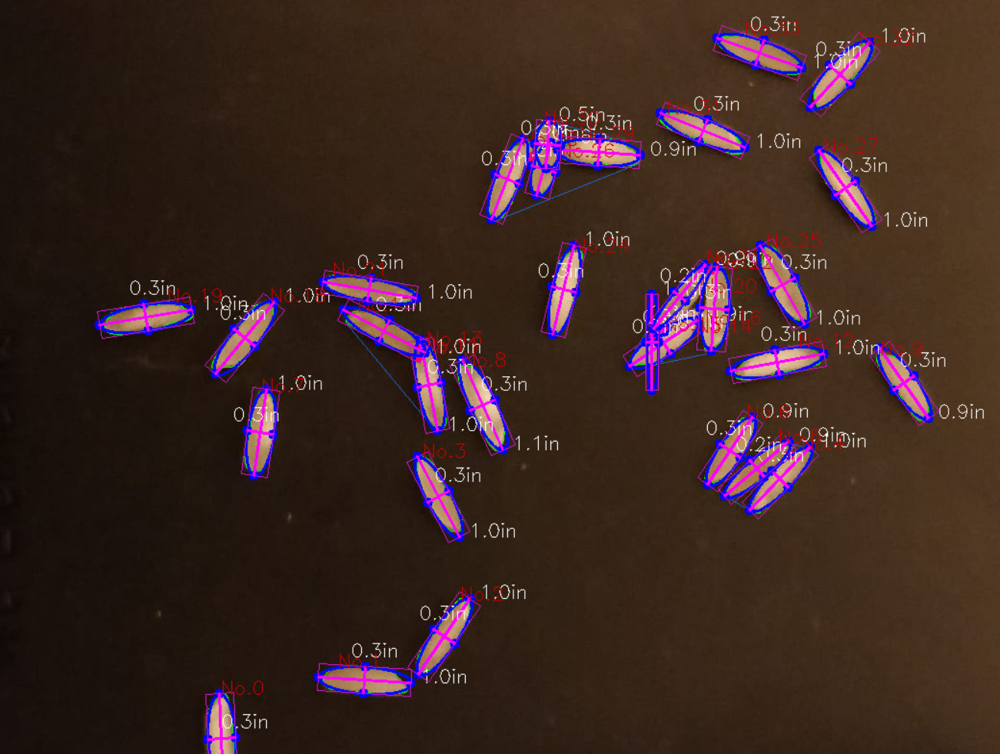

Hand-held Grain detector and Analyzer
 fig 1. Detection & Analysis of various ellipsce
fig 1. Detection & Analysis of various ellipsce
Background
Monitoring and inspection of food grains is very crucial to match the expected quality of deliverable products in food industries. Conventionally it is done manually by experienced individuals and can take a lot of time. In a fast moving industry, automation of such processes can significantly increase the overall productivity and efficiency.This work proposes a handheld device which can be used to identify, classify and analyse various parameters of any randomly scattered grain sample in which grains need not be well separated to enable faster, easier and efficient way for inspection in food grain industries, agriculture and wholesale markets.
Computer vision and various image processing techniques are used to automate grain detection and are analysis. Necessary IoT has been incorporated to connect the User smartphone and the Device to retrieve the Analysis results.
In this project I have follwed this procedure:
- Product Design and Hardware
- Image capture and pre-processing
- Histogram based Rice Segmentation
- Canny Edge detection
- Overlapped grain detection using convexity defects
- Overlapped rice segregation and final detection
- Final counts, and feature analysis and rice type classification

fig 2. Hand-held grain analyser
Design
The whole design of the Handheld Grain Analyzer was accomplished on Autodesk Fusion 360 for flexible usage. The design process went under 3 Major iterations.
fig 3. Hand-held grain analyser design

fig 4. Micro-controller placement

fig 5. Camera and LED holder
Hardware
The electronics of the product was chosen with the sole purpose of making it low-cost, widely available, and easy to use handheld grain analyzer
the design and working of a device is proposed with select electronics to enable image sampling and data acquisition.
It consists of a simple lighting system inside the Handheld grain analyzer to provide just the sufficient light for the Image sampling within the Device.
Lighting module
Two white light Leds spaced symmetrically on both sides of the camera with incorporation of proper diffusers to scatter light uniformly on the grain bed.
Electronics
We are sampling our data using Raspberry-Pi NOiR camera (8 MP), we manually adjust the focus of the camera by rotating the lens cap to bring it to focus at a distance of about 10 cm. A specific box has been designed after several ideations and iterations for most feasible and compact placements of the various modules of the device.
Image can be captured using the “raspistill” command on the raspberry pi terminal.

fig 4. Micro-controller placement
Pre-processing
The captured frames are converted to Grayscale format and resize it down for further processing. Then the image is denoised using Median filter removing the Noisy pixels.Segmentation and rice detection
Now the grayscale image is binarized using Adaptive thresholding technique making sure that only the rice and background is segmented. The variation of Lighting conditions are also been taken care of in this step.After segmenting the backround from the rioce grians, various rice grains are required to be segmented seprately. To achieve this "Canny Edge detection” is used to generate edges around the Rice grains. After Edge detection, contour detection is done which detects the Edge coordinates and stores it as a multi-dimensional array. We get a set of countours for every components(a connected set).

fig 6. Raw image catured from Raspberry-Pi NOiR cam

fig 7. Rice contour detection, counts and size analysis
Rice overlap seperations
Since rice are randomly spread on the platform, there could samples with overlapped grains. We can exclude the overlaps segmentaions using area criteria but this would reduce our sample sizeThere could be cases but before that we still need to segregate the touching rice grains which were processed as a single contour due to close contact. We will use the Convexity function around the curves of the rice contours to find the points of defects. Defects are the points where the contour of the two or more touching grains meets. We know that the shape of the rice is always oval and Convex from the outside, so whenever we encounter a concave curve around the contours it can only be as a result of some rice grains touching each other. There can be some exceptional cases that will outrun the above mentioned hypothesis, we will talk later about how we are excluding them from our results to make it error free. We have used convexHull and convexity Defects functions of OpenCV2 to find the defects as the various local maxima of Concavity in the contours. After we detect the Defects as the point of contact of the touching rice grains we separated the contours of by following two steps: First we draw a series of black line matching the background color to erase the edges joining the corners of the touching rice grains to separate the edge curves of the touching grains, then we run the Canny edge detection again over this modified image to get the new contours with most of the touching rice contours separated out.
fig 8. Various overlaps seperation using convexity defects
After we get our final contours we will approximate ellipses using "fitEllipse" function from OpenCV to find the characteristic features like Length, Breadth, Ratio and area of the rice grains. But before averaging and concluding with results we will exclude those processed samples which are exceptional as per our general hypothesis and can lead to an error in our final Averaged Output. We use categorization on the basis of Ratios (length:width) and Area of the ellipses to exclude the unwanted contours outliers from the detected contours.